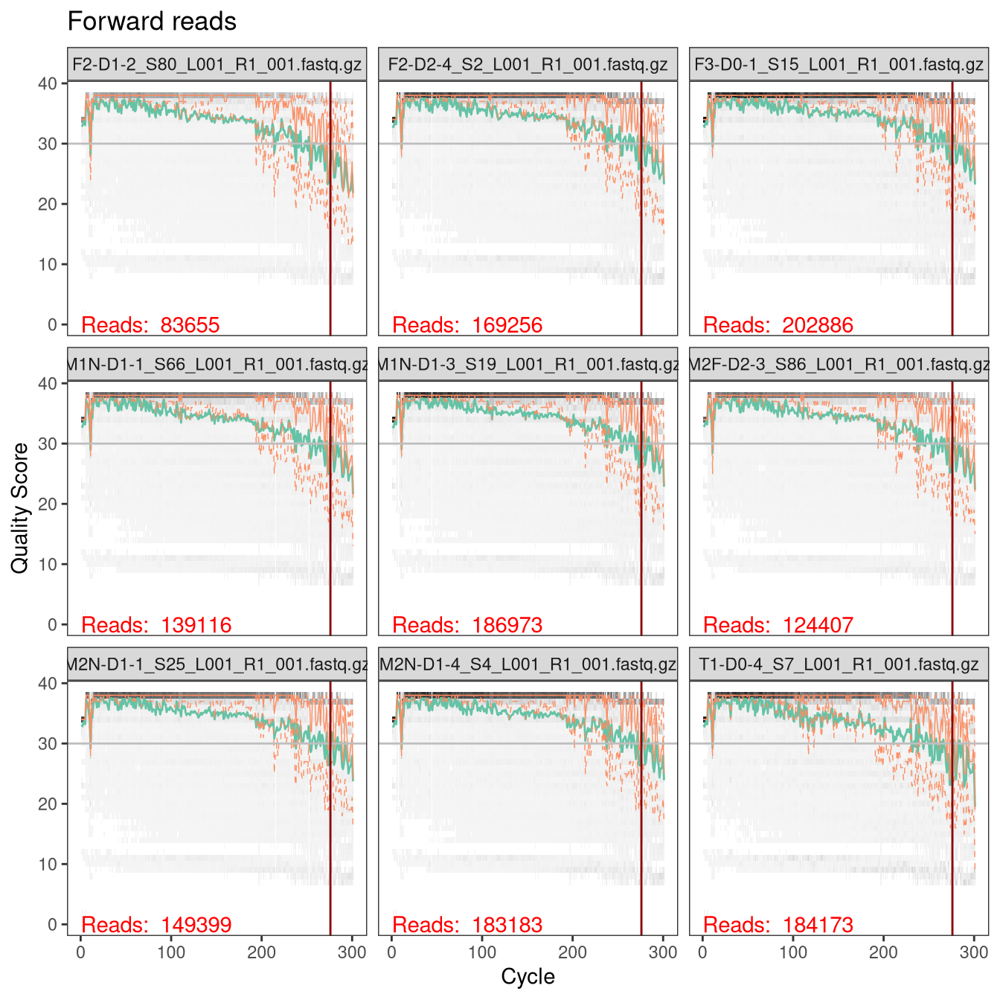
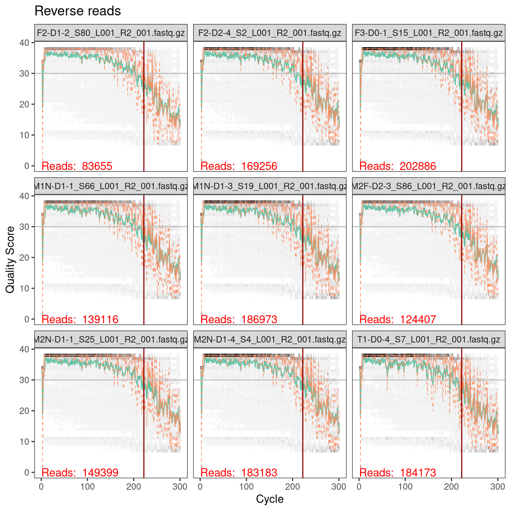

This document analyzes the amplicon data from the A2 sequencing center for the 2021 experiment following the workflow used for the 2019 experiment.
We follow the workflow in ‘analysis/2020-11-01-dada2/a2-dada2.html’ that was used for the 2019 experiment.
Load non-bioinformatic libraries,
#> here() starts at /home/michael/research/vivo-vitro#> ── Attaching packages ─────────────────────────────────── tidyverse 1.3.1 ──
#> ✔ ggplot2 3.3.5 ✔ purrr 0.3.4
#> ✔ tibble 3.1.6 ✔ dplyr 1.0.8
#> ✔ tidyr 1.2.0 ✔ stringr 1.4.0
#> ✔ readr 2.1.1 ✔ forcats 0.5.1
#> ── Conflicts ────────────────────────────────────── tidyverse_conflicts() ──
#> ✖ dplyr::filter() masks stats::filter()
#> ✖ dplyr::lag() masks stats::lag()Next, I will install and load the previous DADA2 version that I used for the 2020-11-01 analysis of the 2019 data: version 1.18.0 from Bioconductor, which corresponds to the v1.18 tag (a20a676) on GitHub (https://github.com/benjjneb/dada2/releases/tag/v1.18). (Only run if not previously done.)
dr <- here('lib', 'R', 'library-for-dada2-1.18.0')
if (!dir_exists(dr))
dir_create(dr)
devtools::dev_mode(TRUE, dr)
#> ✔ Dev mode: ONif (packageVersion("dada2") != "1.18.0")
remotes::install_github('benjjneb/dada2@v1.18')
Load DADA2 and functions from bioinformatics libraries
stopifnot(packageVersion("dada2") == "1.18.0")
library(dada2)
#> Loading required package: RcppPath for saving dada2 results:
results_path <- here("output", "2021", "a2", "dada2")
dir.create(results_path, recursive = TRUE)
#> Warning in dir.create(results_path, recursive = TRUE): '/home/michael/
#> research/vivo-vitro/output/2021/a2/dada2' already existsPath to the fastq files:
reads_path <- here("data", "2021", "a2", "reads")
dir_ls(path(reads_path, "raw")) %>% path_file %>% head
#> [1] "F1-D0-1_S10_L001_R1_001.fastq.gz"
#> [2] "F1-D0-1_S10_L001_R2_001.fastq.gz"
#> [3] "F1-D0-2_S89_L001_R1_001.fastq.gz"
#> [4] "F1-D0-2_S89_L001_R2_001.fastq.gz"
#> [5] "F1-D0-3_S17_L001_R1_001.fastq.gz"
#> [6] "F1-D0-3_S17_L001_R2_001.fastq.gz"Let’s get a data frame with the sample names, paths to the raw reads, and paths to the (to-be-created) filtered reads. Note the creation of DNA sample names from the sequence files: I revert the hyphens back to underscores, make the names of the A2 control samples lowercase, and prepend 2021 to ensure uniqueness and distinguishability from the 2019 DNA samples. The sequencing center supplied the reads that could not be demultiplxed in files prefixed ‘Undetermined’; I will not include these in the analysis.
ftb <- tibble(path = dir_ls(path(reads_path, "raw"), glob = "*.fastq.gz")) %>%
mutate(
read_direction = case_when(
str_detect(path, "_R1_") ~ "R1",
str_detect(path, "_R2_") ~ "R2"
),
fastq_sample_id = str_extract(path %>% path_file, "[^_]+"),
dna_sample_id = case_when(
fastq_sample_id %in% c('MockZymoPos', 'WaterNeg') ~
str_to_lower(fastq_sample_id),
TRUE ~ str_replace_all(fastq_sample_id, "-", "_"),
),
dna_sample_id = str_c("2021_", dna_sample_id),
sample_id = str_c("A2_", dna_sample_id),
path_filt = path(reads_path, "filtered",
str_glue("{fastq_sample_id}_{read_direction}_filt.fastq.gz")
)
) %>%
pivot_wider(names_from = read_direction, values_from = c(path, path_filt)) %>%
filter(fastq_sample_id != 'Undetermined')
# Check
ftb %>% head %>% mutate(across(starts_with("path"), path_file)) %>% glimpse
#> Rows: 6
#> Columns: 7
#> $ fastq_sample_id <chr> "F1-D0-1", "F1-D0-2", "F1-D0-3", "F1-D0-4", …
#> $ dna_sample_id <chr> "2021_F1_D0_1", "2021_F1_D0_2", "2021_F1_D0_…
#> $ sample_id <chr> "A2_2021_F1_D0_1", "A2_2021_F1_D0_2", "A2_20…
#> $ path_R1 <chr> "F1-D0-1_S10_L001_R1_001.fastq.gz", "F1-D0-2…
#> $ path_R2 <chr> "F1-D0-1_S10_L001_R2_001.fastq.gz", "F1-D0-2…
#> $ path_filt_R1 <chr> "F1-D0-1_R1_filt.fastq.gz", "F1-D0-2_R1_filt…
#> $ path_filt_R2 <chr> "F1-D0-1_R2_filt.fastq.gz", "F1-D0-2_R2_filt…The Illumina manual lists the primer sequences as
16S Amplicon PCR Forward Primer = 5’ TCGTCGGCAGCGTCAGATGTGTATAAGAGACAGCCTACGGGNGGCWGCAG 16S Amplicon PCR Reverse Primer = 5’ GTCTCGTGGGCTCGGAGATGTGTATAAGAGACAGGACTACHVGGGTATCTAATCC
and states that the sequenced region is V3-V4 and approximately 460 bp long.
Let’s check to see if the same substrings of the primer sequences as last time are present.
reads <- ftb %>%
filter(dna_sample_id == "2021_M3F_D0_1") %>%
select(R1 = path_R1, R2 = path_R2) %>%
c %>%
map(readDNAStringSet, format = "fastq")
reads %>% map(subseq, end = 30)
#> $R1
#> DNAStringSet object of length 210056:
#> width seq names
#> [1] 30 CCTACGGGGGGCTGCAGTGAGGAATATTGG M04754:191:000000...
#> [2] 30 CCTACGGGCGGCTGCAGTGGGGAATATTGC M04754:191:000000...
#> [3] 30 CCTACGGGTGGCAGCAGTAGGGAATCTTCC M04754:191:000000...
#> [4] 30 CCTACGGGTGGCAGCAGTGAGGAATATTGG M04754:191:000000...
#> [5] 30 CCTACGGGAGGCAGCAGTGAGGAATATTGG M04754:191:000000...
#> ... ... ...
#> [210052] 30 CCTACGGGTGGCTGCAGTGAGGAATATTGG M04754:191:000000...
#> [210053] 30 CCTACGGGAGGCTGCAGTCGAGAATCATTC M04754:191:000000...
#> [210054] 30 CCTACGGGTGGCTGCAGTGGGGAATATTGG M04754:191:000000...
#> [210055] 30 CCTACGGGTGGCAGCAGTGGGGAATATTGC M04754:191:000000...
#> [210056] 30 CCTACGGGTGGCAGCAGTGAGGAATATTGG M04754:191:000000...
#>
#> $R2
#> DNAStringSet object of length 210056:
#> width seq names
#> [1] 30 GACTACTCGGGTATCTAATCCTGTTTGATA M04754:191:000000...
#> [2] 30 GACTACTGGGGTATCTAATCCTGTTTGCTC M04754:191:000000...
#> [3] 30 GGATCACTTGGGCACTCAACCCTGTTTGTC M04754:191:000000...
#> [4] 30 GACTACACGGGTATCAACTCCGTTTGACAC M04754:191:000000...
#> [5] 30 GCCACCTGGGTACTCAACTCCGTTTGACAC M04754:191:000000...
#> ... ... ...
#> [210052] 30 GANTANCGGGGTATCTAATCCTGTTTGATA M04754:191:000000...
#> [210053] 30 GANTANTAGGGTATCTAATCCCTTTCGCTC M04754:191:000000...
#> [210054] 30 GANTANCAGGGTATCTAATCCTGTTTGATA M04754:191:000000...
#> [210055] 30 GANTANTCGGGTATCTAATCCTGTTTGCTA M04754:191:000000...
#> [210056] 30 GANTANCAGGGTATCTAATCCTGTTTGATA M04754:191:000000...We can see that as before, the following parts of the described primer sequences arepresent and need to be trimmed:
primers <- c(R1 = "CCTACGGGNGGCWGCAG", R2 = "GACTACHVGGGTATCTAATCC")
trim_left <- primers %>% map_int(nchar) %>% print
#> R1 R2
#> 17 21Previously, I determined that the length of the target region (excluding primer sequences) in our reference genomes was 420-430 bp. Also, I ran FIGARO on the 2019 data to pick the following truncation and maxEE parameters,
target_len <- 430
trunc_len <- c(R1 = 276, R2 = 222)
max_ee <- c(R1 = 4, R2 = 3)
# should overlap by at least
sum(trunc_len) - sum(trim_left) - target_len
#> [1] 30Here we’ll aim to use the same parameters. Let’s check some quality profiles to ensure these truncation lengths still look good,
#> [1] 49 65 25 74 18 96 47 24 71#> [1] "A2_2021_M1N_D1_3" "A2_2021_M2F_D2_3" "A2_2021_F3_D0_1"
#> [4] "A2_2021_M2N_D1_4" "A2_2021_F2_D1_2" "A2_2021_T1_D0_4"
#> [7] "A2_2021_M1N_D1_1" "A2_2021_F2_D2_4" "A2_2021_M2N_D1_1"#> Warning: `guides(<scale> = FALSE)` is deprecated. Please use `guides(<scale> = "none")` instead.
#> `guides(<scale> = FALSE)` is deprecated. Please use `guides(<scale> = "none")` instead.p1 <- qps[["R1"]] +
geom_hline(yintercept = 30, color = "grey") +
geom_vline(xintercept = trunc_len[1], color = "darkred") +
ggtitle("Forward reads")
p2 <- qps[["R2"]] +
geom_hline(yintercept = 30, color = "grey") +
geom_vline(xintercept = trunc_len[2], color = "darkred") +
ggtitle("Reverse reads")
p1

p2

The sequencing quality looks good and profiles are similar to the 2019 experiment, so these truncation parameters should work fine.
First, delete the filtered reads from any previous runs (if they exist),
if (dir_exists(path(reads_path, "filtered")))
dir_delete(path(reads_path, "filtered"))
and set up lists with the paths to the forward and reverse reads (raw and filtered). Note, the file paths are named by sample id so that later DADA2 functions will name the samples by sample id instead of file name.
path_raw <- list(R1 = ftb$path_R1, R2 = ftb$path_R2) %>%
map(set_names, ftb$sample_id)
path_filt <- list(R1 = ftb$path_filt_R1, R2 = ftb$path_filt_R2) %>%
map(set_names, ftb$sample_id)
# Check
path_filt %>% map(tail, 4) %>% map(names)
#> $R1
#> [1] "A2_2021_T1_D0_1" "A2_2021_T1_D0_2" "A2_2021_T1_D0_3"
#> [4] "A2_2021_T1_D0_4"
#>
#> $R2
#> [1] "A2_2021_T1_D0_1" "A2_2021_T1_D0_2" "A2_2021_T1_D0_3"
#> [4] "A2_2021_T1_D0_4"#> $R1
#> [1] "T1-D0-1_R1_filt.fastq.gz" "T1-D0-2_R1_filt.fastq.gz"
#> [3] "T1-D0-3_R1_filt.fastq.gz" "T1-D0-4_R1_filt.fastq.gz"
#>
#> $R2
#> [1] "T1-D0-1_R2_filt.fastq.gz" "T1-D0-2_R2_filt.fastq.gz"
#> [3] "T1-D0-3_R2_filt.fastq.gz" "T1-D0-4_R2_filt.fastq.gz"Then filter and trim.
out <- filterAndTrim(
path_raw[[1]], path_filt[[1]],
path_raw[[2]], path_filt[[2]],
trimLeft = trim_left, truncLen = trunc_len,
maxN = 0, maxEE = max_ee, truncQ = 2, rm.phix = TRUE,
compress = TRUE, multithread = TRUE)
#> Creating output directory: /home/michael/research/vivo-vitro/data/2021/a2/reads/filteredhead(out)
#> reads.in reads.out
#> F1-D0-1_S10_L001_R1_001.fastq.gz 150600 121742
#> F1-D0-2_S89_L001_R1_001.fastq.gz 160932 128950
#> F1-D0-3_S17_L001_R1_001.fastq.gz 150077 122089
#> F1-D0-4_S39_L001_R1_001.fastq.gz 134714 109607
#> F1-D1-1_S68_L001_R1_001.fastq.gz 151965 122963
#> F1-D1-2_S56_L001_R1_001.fastq.gz 158259 125576#> 124938492 total bases in 482388 reads from 4 samples will be used for learning the error rates.
#> 121675551 total bases in 605351 reads from 5 samples will be used for learning the error rates.plotErrors(errs[[1]], nominalQ = TRUE)
#> Warning: Transformation introduced infinite values in continuous y-
#> axis#> Warning: Transformation introduced infinite values in continuous y-
#> axisplotErrors(errs[[2]], nominalQ = TRUE)
#> Warning: Transformation introduced infinite values in continuous y-
#> axis#> Warning: Transformation introduced infinite values in continuous y-
#> axisThe following settings for the dada() inference step are used:
pool = "pseudo" optionPSEUDO_PREVALENCE = 4 (increased from default of 2 to reduce the number of spurious low-prev ASVs seen in the pilot)dada()) is run two different ways: The default settings, and with OMEGA_C = 2 (which prevents error correction, so that we can assign abundances using just the error-free read-pairs).OMEGA_CSample inference w/ dada()
dadas <- map2(
path_filt,
errs,
dada,
multithread = TRUE, pool = "pseudo",
PSEUDO_PREVALENCE = 4
)
#> Sample 1 - 121742 reads in 25575 unique sequences.
#> Sample 2 - 128950 reads in 26403 unique sequences.
#> Sample 3 - 122089 reads in 23363 unique sequences.
#> Sample 4 - 109607 reads in 24030 unique sequences.
#> Sample 5 - 122963 reads in 26667 unique sequences.
#> Sample 6 - 125576 reads in 27192 unique sequences.
#> Sample 7 - 111264 reads in 24130 unique sequences.
#> Sample 8 - 174377 reads in 35475 unique sequences.
#> Sample 9 - 117765 reads in 26204 unique sequences.
#> Sample 10 - 134307 reads in 28686 unique sequences.
#> Sample 11 - 148672 reads in 30167 unique sequences.
#> Sample 12 - 110742 reads in 25222 unique sequences.
#> Sample 13 - 144767 reads in 27835 unique sequences.
#> Sample 14 - 136169 reads in 24914 unique sequences.
#> Sample 15 - 110253 reads in 22058 unique sequences.
#> Sample 16 - 136410 reads in 24539 unique sequences.
#> Sample 17 - 117137 reads in 22606 unique sequences.
#> Sample 18 - 65569 reads in 17913 unique sequences.
#> Sample 19 - 102670 reads in 20851 unique sequences.
#> Sample 20 - 112281 reads in 24814 unique sequences.
#> Sample 21 - 138049 reads in 27394 unique sequences.
#> Sample 22 - 157679 reads in 28636 unique sequences.
#> Sample 23 - 113866 reads in 22445 unique sequences.
#> Sample 24 - 133996 reads in 26824 unique sequences.
#> Sample 25 - 165095 reads in 30527 unique sequences.
#> Sample 26 - 123661 reads in 25576 unique sequences.
#> Sample 27 - 145073 reads in 29058 unique sequences.
#> Sample 28 - 108056 reads in 23024 unique sequences.
#> Sample 29 - 123552 reads in 26434 unique sequences.
#> Sample 30 - 110229 reads in 25884 unique sequences.
#> Sample 31 - 107530 reads in 22463 unique sequences.
#> Sample 32 - 112419 reads in 25782 unique sequences.
#> Sample 33 - 125104 reads in 26440 unique sequences.
#> Sample 34 - 197929 reads in 35784 unique sequences.
#> Sample 35 - 157754 reads in 30631 unique sequences.
#> Sample 36 - 126564 reads in 28762 unique sequences.
#> Sample 37 - 133185 reads in 27801 unique sequences.
#> Sample 38 - 155321 reads in 31368 unique sequences.
#> Sample 39 - 105466 reads in 23726 unique sequences.
#> Sample 40 - 115309 reads in 25816 unique sequences.
#> Sample 41 - 121892 reads in 25785 unique sequences.
#> Sample 42 - 98848 reads in 22943 unique sequences.
#> Sample 43 - 99851 reads in 24810 unique sequences.
#> Sample 44 - 162855 reads in 31337 unique sequences.
#> Sample 45 - 104604 reads in 22669 unique sequences.
#> Sample 46 - 126851 reads in 27724 unique sequences.
#> Sample 47 - 108314 reads in 23521 unique sequences.
#> Sample 48 - 130225 reads in 28055 unique sequences.
#> Sample 49 - 149520 reads in 27458 unique sequences.
#> Sample 50 - 162053 reads in 31445 unique sequences.
#> Sample 51 - 119936 reads in 24325 unique sequences.
#> Sample 52 - 116195 reads in 24568 unique sequences.
#> Sample 53 - 110691 reads in 24432 unique sequences.
#> Sample 54 - 112178 reads in 27041 unique sequences.
#> Sample 55 - 167359 reads in 36355 unique sequences.
#> Sample 56 - 95833 reads in 22172 unique sequences.
#> Sample 57 - 111376 reads in 27055 unique sequences.
#> Sample 58 - 106360 reads in 23371 unique sequences.
#> Sample 59 - 126877 reads in 32229 unique sequences.
#> Sample 60 - 117907 reads in 25255 unique sequences.
#> Sample 61 - 111267 reads in 25950 unique sequences.
#> Sample 62 - 118149 reads in 25339 unique sequences.
#> Sample 63 - 161806 reads in 30974 unique sequences.
#> Sample 64 - 138744 reads in 27896 unique sequences.
#> Sample 65 - 98773 reads in 23452 unique sequences.
#> Sample 66 - 176975 reads in 32963 unique sequences.
#> Sample 67 - 113222 reads in 24923 unique sequences.
#> Sample 68 - 134841 reads in 30698 unique sequences.
#> Sample 69 - 149102 reads in 32356 unique sequences.
#> Sample 70 - 115392 reads in 26864 unique sequences.
#> Sample 71 - 120571 reads in 24846 unique sequences.
#> Sample 72 - 108729 reads in 23280 unique sequences.
#> Sample 73 - 108661 reads in 22716 unique sequences.
#> Sample 74 - 148569 reads in 30846 unique sequences.
#> Sample 75 - 115256 reads in 25053 unique sequences.
#> Sample 76 - 104048 reads in 24693 unique sequences.
#> Sample 77 - 116114 reads in 25206 unique sequences.
#> Sample 78 - 108593 reads in 21090 unique sequences.
#> Sample 79 - 167701 reads in 34161 unique sequences.
#> Sample 80 - 170878 reads in 37831 unique sequences.
#> Sample 81 - 132214 reads in 30000 unique sequences.
#> Sample 82 - 157762 reads in 30346 unique sequences.
#> Sample 83 - 154395 reads in 31945 unique sequences.
#> Sample 84 - 113625 reads in 25282 unique sequences.
#> Sample 85 - 118923 reads in 25640 unique sequences.
#> Sample 86 - 131569 reads in 30861 unique sequences.
#> Sample 87 - 113192 reads in 26263 unique sequences.
#> Sample 88 - 105216 reads in 23463 unique sequences.
#> Sample 89 - 113874 reads in 25122 unique sequences.
#> Sample 90 - 123707 reads in 27819 unique sequences.
#> Sample 91 - 94532 reads in 27867 unique sequences.
#> Sample 92 - 96498 reads in 26033 unique sequences.
#> Sample 93 - 111858 reads in 23220 unique sequences.
#> Sample 94 - 121948 reads in 24379 unique sequences.
#> Sample 95 - 49178 reads in 16475 unique sequences.
#> Sample 96 - 140587 reads in 26137 unique sequences.
#>
#> selfConsist step 2Sample 1 - 121742 reads in 21779 unique sequences.
#> Sample 2 - 128950 reads in 23946 unique sequences.
#> Sample 3 - 122089 reads in 24252 unique sequences.
#> Sample 4 - 109607 reads in 18606 unique sequences.
#> Sample 5 - 122963 reads in 26318 unique sequences.
#> Sample 6 - 125576 reads in 22883 unique sequences.
#> Sample 7 - 111264 reads in 19398 unique sequences.
#> Sample 8 - 174377 reads in 30058 unique sequences.
#> Sample 9 - 117765 reads in 24831 unique sequences.
#> Sample 10 - 134307 reads in 28794 unique sequences.
#> Sample 11 - 148672 reads in 28211 unique sequences.
#> Sample 12 - 110742 reads in 22938 unique sequences.
#> Sample 13 - 144767 reads in 27934 unique sequences.
#> Sample 14 - 136169 reads in 27278 unique sequences.
#> Sample 15 - 110253 reads in 20302 unique sequences.
#> Sample 16 - 136410 reads in 25638 unique sequences.
#> Sample 17 - 117137 reads in 22026 unique sequences.
#> Sample 18 - 65569 reads in 13221 unique sequences.
#> Sample 19 - 102670 reads in 19752 unique sequences.
#> Sample 20 - 112281 reads in 24676 unique sequences.
#> Sample 21 - 138049 reads in 28555 unique sequences.
#> Sample 22 - 157679 reads in 29815 unique sequences.
#> Sample 23 - 113866 reads in 21867 unique sequences.
#> Sample 24 - 133996 reads in 24254 unique sequences.
#> Sample 25 - 165095 reads in 31313 unique sequences.
#> Sample 26 - 123661 reads in 25482 unique sequences.
#> Sample 27 - 145073 reads in 26033 unique sequences.
#> Sample 28 - 108056 reads in 20428 unique sequences.
#> Sample 29 - 123552 reads in 26723 unique sequences.
#> Sample 30 - 110229 reads in 20822 unique sequences.
#> Sample 31 - 107530 reads in 21801 unique sequences.
#> Sample 32 - 112419 reads in 21824 unique sequences.
#> Sample 33 - 125104 reads in 25992 unique sequences.
#> Sample 34 - 197929 reads in 44233 unique sequences.
#> Sample 35 - 157754 reads in 32793 unique sequences.
#> Sample 36 - 126564 reads in 24502 unique sequences.
#> Sample 37 - 133185 reads in 26414 unique sequences.
#> Sample 38 - 155321 reads in 34382 unique sequences.
#> Sample 39 - 105466 reads in 20123 unique sequences.
#> Sample 40 - 115309 reads in 24262 unique sequences.
#> Sample 41 - 121892 reads in 26507 unique sequences.
#> Sample 42 - 98848 reads in 21389 unique sequences.
#> Sample 43 - 99851 reads in 18974 unique sequences.
#> Sample 44 - 162855 reads in 30391 unique sequences.
#> Sample 45 - 104604 reads in 18900 unique sequences.
#> Sample 46 - 126851 reads in 26866 unique sequences.
#> Sample 47 - 108314 reads in 22909 unique sequences.
#> Sample 48 - 130225 reads in 22975 unique sequences.
#> Sample 49 - 149520 reads in 33157 unique sequences.
#> Sample 50 - 162053 reads in 33715 unique sequences.
#> Sample 51 - 119936 reads in 23859 unique sequences.
#> Sample 52 - 116195 reads in 24250 unique sequences.
#> Sample 53 - 110691 reads in 23385 unique sequences.
#> Sample 54 - 112178 reads in 32963 unique sequences.
#> Sample 55 - 167359 reads in 30380 unique sequences.
#> Sample 56 - 95833 reads in 17799 unique sequences.
#> Sample 57 - 111376 reads in 20483 unique sequences.
#> Sample 58 - 106360 reads in 20752 unique sequences.
#> Sample 59 - 126877 reads in 22471 unique sequences.
#> Sample 60 - 117907 reads in 25967 unique sequences.
#> Sample 61 - 111267 reads in 21427 unique sequences.
#> Sample 62 - 118149 reads in 22154 unique sequences.
#> Sample 63 - 161806 reads in 31608 unique sequences.
#> Sample 64 - 138744 reads in 27484 unique sequences.
#> Sample 65 - 98773 reads in 18508 unique sequences.
#> Sample 66 - 176975 reads in 37865 unique sequences.
#> Sample 67 - 113222 reads in 21674 unique sequences.
#> Sample 68 - 134841 reads in 25149 unique sequences.
#> Sample 69 - 149102 reads in 27194 unique sequences.
#> Sample 70 - 115392 reads in 21553 unique sequences.
#> Sample 71 - 120571 reads in 21898 unique sequences.
#> Sample 72 - 108729 reads in 20542 unique sequences.
#> Sample 73 - 108661 reads in 21550 unique sequences.
#> Sample 74 - 148569 reads in 28137 unique sequences.
#> Sample 75 - 115256 reads in 21853 unique sequences.
#> Sample 76 - 104048 reads in 20642 unique sequences.
#> Sample 77 - 116114 reads in 20887 unique sequences.
#> Sample 78 - 108593 reads in 21800 unique sequences.
#> Sample 79 - 167701 reads in 35267 unique sequences.
#> Sample 80 - 170878 reads in 31030 unique sequences.
#> Sample 81 - 132214 reads in 24867 unique sequences.
#> Sample 82 - 157762 reads in 35675 unique sequences.
#> Sample 83 - 154395 reads in 33985 unique sequences.
#> Sample 84 - 113625 reads in 22264 unique sequences.
#> Sample 85 - 118923 reads in 25540 unique sequences.
#> Sample 86 - 131569 reads in 29033 unique sequences.
#> Sample 87 - 113192 reads in 23522 unique sequences.
#> Sample 88 - 105216 reads in 23531 unique sequences.
#> Sample 89 - 113874 reads in 23178 unique sequences.
#> Sample 90 - 123707 reads in 24794 unique sequences.
#> Sample 91 - 94532 reads in 27889 unique sequences.
#> Sample 92 - 96498 reads in 26403 unique sequences.
#> Sample 93 - 111858 reads in 23120 unique sequences.
#> Sample 94 - 121948 reads in 23388 unique sequences.
#> Sample 95 - 49178 reads in 30282 unique sequences.
#> Sample 96 - 140587 reads in 25653 unique sequences.
#>
#> selfConsist step 2Check the results:
dadas[[1]][[1]]
#> dada-class: object describing DADA2 denoising results
#> 369 sequence variants were inferred from 25575
#> input unique sequences.
#> Key parameters: OMEGA_A = 1e-40, OMEGA_C = 1e-40, BAND_SIZE = 16head(getSequences(dadas[[1]][[1]]), 2)
#> [1] "TGAGGAATATTGGTCAATGGGCGAGAGCCTGAACCAGCCAAGTAGCGTGAAGGATGAAGGCTCTATGGGTCGTAAACTTCTTTTATATGGGAATAAAGTTTTCCACGTGTGGAATTTTGTATGTACCATATGAATAAGGATCGGCTAACTCCGTGCCAGCAGCCGCGGTAATACGGAGGATCCGAGCGTTATCCGGATTTATTGGGTTTAAAGGGAGCGTAGGTGGATTGTTAAGTCAGTTGTGAAAGTTTGCGGCTCA"
#> [2] "TGAGGAATATTGGTCAATGGGCGCAGGCCTGAACCAGCCAAGTAGCGTGAAGGATGACTGCCCTATGGGTTGTAAACTTCTTTTATATGGGAATAAAGTTTTCCACGTGTGGAATTTTGTATGTACCATATGAATAAGGATCGGCTAACTCCGTGCCAGCAGCCGCGGTAATACGGAGGATCCGAGCGTTATCCGGATTTATTGGGTTTAAAGGGAGCGTAGGTGGACAGTTAAGTCAGTTGTGAAAGTTTGCGGCTCA"Merge paired reads,
mergers <- mergePairs(
dadas[[1]], path_filt[[1]],
dadas[[2]], path_filt[[2]],
verbose = TRUE)
saveRDS(mergers, file.path(results_path, "mergers-1.Rds"))
Construct sequence table
seqtab <- makeSequenceTable(mergers)
saveRDS(seqtab, file.path(results_path, "seqtab-1.Rds"))
dim(seqtab)
#> [1] 96 20873Inspect distribution of sequence lengths
table(nchar(getSequences(seqtab)))
#>
#> 259 260 267 269 272 276 284 302 323 325 327
#> 55 20 26 1 3 1 1 1 1 2 2
#> 328 331 335 343 344 346 348 349 350 351 358
#> 1 1 7 3 6 1 1 1 5 1 1
#> 364 365 370 372 373 377 378 379 380 383 384
#> 1 1 5 1 1 1 1 1 1 7 10
#> 386 387 388 389 392 393 398 399 400 401 402
#> 9 1 3 6 18 1 8 2 1 59 1846
#> 403 404 405 406 407 408 409 411 413 414 415
#> 460 338 15 8 109 936 5 1 1 4 1
#> 419 420 421 422 423 424 425 426 427 428 429
#> 2 9 163 11314 12 1 7 40 4331 959 12
#> 432 436 438 439 441 444 445 446 447 448
#> 1 1 1 2 2 3 2 4 3 1Remove chimeras (with ‘pooled’ method)
seqtab.nochim <- removeBimeraDenovo(seqtab, method = "pooled",
multithread = TRUE, verbose = TRUE)
#> Identified 20018 bimeras out of 20873 input sequences.#> [1] 96 855#> [1] 0.7899633Track reads through the pipeline,
getN <- function(x) sum(getUniques(x))
track <- cbind(out, sapply(dadas[[1]], getN), sapply(dadas[[2]], getN),
sapply(mergers, getN), rowSums(seqtab.nochim))
colnames(track) <- c("input", "filtered", "denoised_r1", "denoised_r2", "merged",
"nochim")
rownames(track) <- ftb$sample_id
track <- as_tibble(track, rownames = "sample_id")
write_csv(track, file.path(results_path, "track-1.csv"))
head(track)
#> # A tibble: 6 × 7
#> sample_id input filtered denoised_r1 denoised_r2 merged nochim
#> <chr> <dbl> <dbl> <dbl> <dbl> <dbl> <dbl>
#> 1 A2_2021_F1_D0… 150600 121742 121599 121571 119082 84955
#> 2 A2_2021_F1_D0… 160932 128950 128708 128774 126226 94803
#> 3 A2_2021_F1_D0… 150077 122089 121936 121960 119785 85799
#> 4 A2_2021_F1_D0… 134714 109607 109418 109492 107502 79040
#> 5 A2_2021_F1_D1… 151965 122963 122728 122811 120427 89770
#> 6 A2_2021_F1_D1… 158259 125576 125344 125382 123076 92669OMEGA_C = 2rm(dadas, mergers, seqtab, seqtab.nochim, track)
Sample inference w/ dada()
dadas <- map2(
path_filt,
errs,
dada,
multithread = TRUE, pool = "pseudo",
PSEUDO_PREVALENCE = 4,
OMEGA_C = 2
)
#> Sample 1 - 121742 reads in 25575 unique sequences.
#> Sample 2 - 128950 reads in 26403 unique sequences.
#> Sample 3 - 122089 reads in 23363 unique sequences.
#> Sample 4 - 109607 reads in 24030 unique sequences.
#> Sample 5 - 122963 reads in 26667 unique sequences.
#> Sample 6 - 125576 reads in 27192 unique sequences.
#> Sample 7 - 111264 reads in 24130 unique sequences.
#> Sample 8 - 174377 reads in 35475 unique sequences.
#> Sample 9 - 117765 reads in 26204 unique sequences.
#> Sample 10 - 134307 reads in 28686 unique sequences.
#> Sample 11 - 148672 reads in 30167 unique sequences.
#> Sample 12 - 110742 reads in 25222 unique sequences.
#> Sample 13 - 144767 reads in 27835 unique sequences.
#> Sample 14 - 136169 reads in 24914 unique sequences.
#> Sample 15 - 110253 reads in 22058 unique sequences.
#> Sample 16 - 136410 reads in 24539 unique sequences.
#> Sample 17 - 117137 reads in 22606 unique sequences.
#> Sample 18 - 65569 reads in 17913 unique sequences.
#> Sample 19 - 102670 reads in 20851 unique sequences.
#> Sample 20 - 112281 reads in 24814 unique sequences.
#> Sample 21 - 138049 reads in 27394 unique sequences.
#> Sample 22 - 157679 reads in 28636 unique sequences.
#> Sample 23 - 113866 reads in 22445 unique sequences.
#> Sample 24 - 133996 reads in 26824 unique sequences.
#> Sample 25 - 165095 reads in 30527 unique sequences.
#> Sample 26 - 123661 reads in 25576 unique sequences.
#> Sample 27 - 145073 reads in 29058 unique sequences.
#> Sample 28 - 108056 reads in 23024 unique sequences.
#> Sample 29 - 123552 reads in 26434 unique sequences.
#> Sample 30 - 110229 reads in 25884 unique sequences.
#> Sample 31 - 107530 reads in 22463 unique sequences.
#> Sample 32 - 112419 reads in 25782 unique sequences.
#> Sample 33 - 125104 reads in 26440 unique sequences.
#> Sample 34 - 197929 reads in 35784 unique sequences.
#> Sample 35 - 157754 reads in 30631 unique sequences.
#> Sample 36 - 126564 reads in 28762 unique sequences.
#> Sample 37 - 133185 reads in 27801 unique sequences.
#> Sample 38 - 155321 reads in 31368 unique sequences.
#> Sample 39 - 105466 reads in 23726 unique sequences.
#> Sample 40 - 115309 reads in 25816 unique sequences.
#> Sample 41 - 121892 reads in 25785 unique sequences.
#> Sample 42 - 98848 reads in 22943 unique sequences.
#> Sample 43 - 99851 reads in 24810 unique sequences.
#> Sample 44 - 162855 reads in 31337 unique sequences.
#> Sample 45 - 104604 reads in 22669 unique sequences.
#> Sample 46 - 126851 reads in 27724 unique sequences.
#> Sample 47 - 108314 reads in 23521 unique sequences.
#> Sample 48 - 130225 reads in 28055 unique sequences.
#> Sample 49 - 149520 reads in 27458 unique sequences.
#> Sample 50 - 162053 reads in 31445 unique sequences.
#> Sample 51 - 119936 reads in 24325 unique sequences.
#> Sample 52 - 116195 reads in 24568 unique sequences.
#> Sample 53 - 110691 reads in 24432 unique sequences.
#> Sample 54 - 112178 reads in 27041 unique sequences.
#> Sample 55 - 167359 reads in 36355 unique sequences.
#> Sample 56 - 95833 reads in 22172 unique sequences.
#> Sample 57 - 111376 reads in 27055 unique sequences.
#> Sample 58 - 106360 reads in 23371 unique sequences.
#> Sample 59 - 126877 reads in 32229 unique sequences.
#> Sample 60 - 117907 reads in 25255 unique sequences.
#> Sample 61 - 111267 reads in 25950 unique sequences.
#> Sample 62 - 118149 reads in 25339 unique sequences.
#> Sample 63 - 161806 reads in 30974 unique sequences.
#> Sample 64 - 138744 reads in 27896 unique sequences.
#> Sample 65 - 98773 reads in 23452 unique sequences.
#> Sample 66 - 176975 reads in 32963 unique sequences.
#> Sample 67 - 113222 reads in 24923 unique sequences.
#> Sample 68 - 134841 reads in 30698 unique sequences.
#> Sample 69 - 149102 reads in 32356 unique sequences.
#> Sample 70 - 115392 reads in 26864 unique sequences.
#> Sample 71 - 120571 reads in 24846 unique sequences.
#> Sample 72 - 108729 reads in 23280 unique sequences.
#> Sample 73 - 108661 reads in 22716 unique sequences.
#> Sample 74 - 148569 reads in 30846 unique sequences.
#> Sample 75 - 115256 reads in 25053 unique sequences.
#> Sample 76 - 104048 reads in 24693 unique sequences.
#> Sample 77 - 116114 reads in 25206 unique sequences.
#> Sample 78 - 108593 reads in 21090 unique sequences.
#> Sample 79 - 167701 reads in 34161 unique sequences.
#> Sample 80 - 170878 reads in 37831 unique sequences.
#> Sample 81 - 132214 reads in 30000 unique sequences.
#> Sample 82 - 157762 reads in 30346 unique sequences.
#> Sample 83 - 154395 reads in 31945 unique sequences.
#> Sample 84 - 113625 reads in 25282 unique sequences.
#> Sample 85 - 118923 reads in 25640 unique sequences.
#> Sample 86 - 131569 reads in 30861 unique sequences.
#> Sample 87 - 113192 reads in 26263 unique sequences.
#> Sample 88 - 105216 reads in 23463 unique sequences.
#> Sample 89 - 113874 reads in 25122 unique sequences.
#> Sample 90 - 123707 reads in 27819 unique sequences.
#> Sample 91 - 94532 reads in 27867 unique sequences.
#> Sample 92 - 96498 reads in 26033 unique sequences.
#> Sample 93 - 111858 reads in 23220 unique sequences.
#> Sample 94 - 121948 reads in 24379 unique sequences.
#> Sample 95 - 49178 reads in 16475 unique sequences.
#> Sample 96 - 140587 reads in 26137 unique sequences.
#>
#> selfConsist step 2Sample 1 - 121742 reads in 21779 unique sequences.
#> Sample 2 - 128950 reads in 23946 unique sequences.
#> Sample 3 - 122089 reads in 24252 unique sequences.
#> Sample 4 - 109607 reads in 18606 unique sequences.
#> Sample 5 - 122963 reads in 26318 unique sequences.
#> Sample 6 - 125576 reads in 22883 unique sequences.
#> Sample 7 - 111264 reads in 19398 unique sequences.
#> Sample 8 - 174377 reads in 30058 unique sequences.
#> Sample 9 - 117765 reads in 24831 unique sequences.
#> Sample 10 - 134307 reads in 28794 unique sequences.
#> Sample 11 - 148672 reads in 28211 unique sequences.
#> Sample 12 - 110742 reads in 22938 unique sequences.
#> Sample 13 - 144767 reads in 27934 unique sequences.
#> Sample 14 - 136169 reads in 27278 unique sequences.
#> Sample 15 - 110253 reads in 20302 unique sequences.
#> Sample 16 - 136410 reads in 25638 unique sequences.
#> Sample 17 - 117137 reads in 22026 unique sequences.
#> Sample 18 - 65569 reads in 13221 unique sequences.
#> Sample 19 - 102670 reads in 19752 unique sequences.
#> Sample 20 - 112281 reads in 24676 unique sequences.
#> Sample 21 - 138049 reads in 28555 unique sequences.
#> Sample 22 - 157679 reads in 29815 unique sequences.
#> Sample 23 - 113866 reads in 21867 unique sequences.
#> Sample 24 - 133996 reads in 24254 unique sequences.
#> Sample 25 - 165095 reads in 31313 unique sequences.
#> Sample 26 - 123661 reads in 25482 unique sequences.
#> Sample 27 - 145073 reads in 26033 unique sequences.
#> Sample 28 - 108056 reads in 20428 unique sequences.
#> Sample 29 - 123552 reads in 26723 unique sequences.
#> Sample 30 - 110229 reads in 20822 unique sequences.
#> Sample 31 - 107530 reads in 21801 unique sequences.
#> Sample 32 - 112419 reads in 21824 unique sequences.
#> Sample 33 - 125104 reads in 25992 unique sequences.
#> Sample 34 - 197929 reads in 44233 unique sequences.
#> Sample 35 - 157754 reads in 32793 unique sequences.
#> Sample 36 - 126564 reads in 24502 unique sequences.
#> Sample 37 - 133185 reads in 26414 unique sequences.
#> Sample 38 - 155321 reads in 34382 unique sequences.
#> Sample 39 - 105466 reads in 20123 unique sequences.
#> Sample 40 - 115309 reads in 24262 unique sequences.
#> Sample 41 - 121892 reads in 26507 unique sequences.
#> Sample 42 - 98848 reads in 21389 unique sequences.
#> Sample 43 - 99851 reads in 18974 unique sequences.
#> Sample 44 - 162855 reads in 30391 unique sequences.
#> Sample 45 - 104604 reads in 18900 unique sequences.
#> Sample 46 - 126851 reads in 26866 unique sequences.
#> Sample 47 - 108314 reads in 22909 unique sequences.
#> Sample 48 - 130225 reads in 22975 unique sequences.
#> Sample 49 - 149520 reads in 33157 unique sequences.
#> Sample 50 - 162053 reads in 33715 unique sequences.
#> Sample 51 - 119936 reads in 23859 unique sequences.
#> Sample 52 - 116195 reads in 24250 unique sequences.
#> Sample 53 - 110691 reads in 23385 unique sequences.
#> Sample 54 - 112178 reads in 32963 unique sequences.
#> Sample 55 - 167359 reads in 30380 unique sequences.
#> Sample 56 - 95833 reads in 17799 unique sequences.
#> Sample 57 - 111376 reads in 20483 unique sequences.
#> Sample 58 - 106360 reads in 20752 unique sequences.
#> Sample 59 - 126877 reads in 22471 unique sequences.
#> Sample 60 - 117907 reads in 25967 unique sequences.
#> Sample 61 - 111267 reads in 21427 unique sequences.
#> Sample 62 - 118149 reads in 22154 unique sequences.
#> Sample 63 - 161806 reads in 31608 unique sequences.
#> Sample 64 - 138744 reads in 27484 unique sequences.
#> Sample 65 - 98773 reads in 18508 unique sequences.
#> Sample 66 - 176975 reads in 37865 unique sequences.
#> Sample 67 - 113222 reads in 21674 unique sequences.
#> Sample 68 - 134841 reads in 25149 unique sequences.
#> Sample 69 - 149102 reads in 27194 unique sequences.
#> Sample 70 - 115392 reads in 21553 unique sequences.
#> Sample 71 - 120571 reads in 21898 unique sequences.
#> Sample 72 - 108729 reads in 20542 unique sequences.
#> Sample 73 - 108661 reads in 21550 unique sequences.
#> Sample 74 - 148569 reads in 28137 unique sequences.
#> Sample 75 - 115256 reads in 21853 unique sequences.
#> Sample 76 - 104048 reads in 20642 unique sequences.
#> Sample 77 - 116114 reads in 20887 unique sequences.
#> Sample 78 - 108593 reads in 21800 unique sequences.
#> Sample 79 - 167701 reads in 35267 unique sequences.
#> Sample 80 - 170878 reads in 31030 unique sequences.
#> Sample 81 - 132214 reads in 24867 unique sequences.
#> Sample 82 - 157762 reads in 35675 unique sequences.
#> Sample 83 - 154395 reads in 33985 unique sequences.
#> Sample 84 - 113625 reads in 22264 unique sequences.
#> Sample 85 - 118923 reads in 25540 unique sequences.
#> Sample 86 - 131569 reads in 29033 unique sequences.
#> Sample 87 - 113192 reads in 23522 unique sequences.
#> Sample 88 - 105216 reads in 23531 unique sequences.
#> Sample 89 - 113874 reads in 23178 unique sequences.
#> Sample 90 - 123707 reads in 24794 unique sequences.
#> Sample 91 - 94532 reads in 27889 unique sequences.
#> Sample 92 - 96498 reads in 26403 unique sequences.
#> Sample 93 - 111858 reads in 23120 unique sequences.
#> Sample 94 - 121948 reads in 23388 unique sequences.
#> Sample 95 - 49178 reads in 30282 unique sequences.
#> Sample 96 - 140587 reads in 25653 unique sequences.
#>
#> selfConsist step 2Check the results:
dadas[[1]][[1]]
#> dada-class: object describing DADA2 denoising results
#> 456 sequence variants were inferred from 25575
#> input unique sequences.
#> Key parameters: OMEGA_A = 1e-40, OMEGA_C = 2, BAND_SIZE = 16head(getSequences(dadas[[1]][[1]]), 2)
#> [1] "TGAGGAATATTGGTCAATGGGCGAGAGCCTGAACCAGCCAAGTAGCGTGAAGGATGAAGGCTCTATGGGTCGTAAACTTCTTTTATATGGGAATAAAGTTTTCCACGTGTGGAATTTTGTATGTACCATATGAATAAGGATCGGCTAACTCCGTGCCAGCAGCCGCGGTAATACGGAGGATCCGAGCGTTATCCGGATTTATTGGGTTTAAAGGGAGCGTAGGTGGATTGTTAAGTCAGTTGTGAAAGTTTGCGGCTCA"
#> [2] "TGAGGAATATTGGTCAATGGGCGCAGGCCTGAACCAGCCAAGTAGCGTGAAGGATGACTGCCCTATGGGTTGTAAACTTCTTTTATATGGGAATAAAGTTTTCCACGTGTGGAATTTTGTATGTACCATATGAATAAGGATCGGCTAACTCCGTGCCAGCAGCCGCGGTAATACGGAGGATCCGAGCGTTATCCGGATTTATTGGGTTTAAAGGGAGCGTAGGTGGACAGTTAAGTCAGTTGTGAAAGTTTGCGGCTCA"Merge paired reads,
mergers <- mergePairs(
dadas[[1]], path_filt[[1]],
dadas[[2]], path_filt[[2]],
verbose = TRUE)
saveRDS(mergers, file.path(results_path, "mergers-2.Rds"))
Construct sequence table
seqtab <- makeSequenceTable(mergers)
saveRDS(seqtab, file.path(results_path, "seqtab-2.Rds"))
dim(seqtab)
#> [1] 96 24402Inspect distribution of sequence lengths
table(nchar(getSequences(seqtab)))
#>
#> 259 260 267 269 272 276 284 323 325 327 328
#> 58 20 29 1 3 1 1 1 2 2 1
#> 331 335 338 341 343 344 346 348 349 350 351
#> 1 7 1 3 3 5 1 1 1 5 1
#> 358 364 370 372 373 377 378 379 380 383 384
#> 1 1 5 1 1 1 1 1 1 7 10
#> 386 387 388 389 392 393 398 399 400 401 402
#> 10 1 1 4 11 1 8 2 1 80 1716
#> 403 404 405 406 407 408 409 411 413 414 415
#> 389 372 16 10 100 905 5 1 1 4 1
#> 419 420 421 422 423 424 425 426 427 428 429
#> 2 12 125 14250 16 3 7 55 5197 890 10
#> 432 438 439 441 444 445 446 447 448
#> 1 1 1 3 3 2 3 3 1Remove chimeras (with ‘pooled’ method)
seqtab.nochim <- removeBimeraDenovo(seqtab, method = "pooled",
multithread = TRUE, verbose = TRUE)
#> Identified 22346 bimeras out of 24402 input sequences.#> [1] 96 2056#> [1] 0.7875494Track reads through the pipeline,
getN <- function(x) sum(getUniques(x))
track <- cbind(out, sapply(dadas[[1]], getN), sapply(dadas[[2]], getN),
sapply(mergers, getN), rowSums(seqtab.nochim))
colnames(track) <- c("input", "filtered", "denoised_r1", "denoised_r2", "merged",
"nochim")
rownames(track) <- ftb$sample_id
track <- as_tibble(track, rownames = "sample_id")
write_csv(track, file.path(results_path, "track-2.csv"))
head(track)
#> # A tibble: 6 × 7
#> sample_id input filtered denoised_r1 denoised_r2 merged nochim
#> <chr> <dbl> <dbl> <dbl> <dbl> <dbl> <dbl>
#> 1 A2_2021_F1_D0… 150600 121742 82879 88192 66517 47118
#> 2 A2_2021_F1_D0… 160932 128950 87961 91752 69451 51802
#> 3 A2_2021_F1_D0… 150077 122089 85573 85424 66136 46854
#> 4 A2_2021_F1_D0… 134714 109607 73664 80377 59143 43190
#> 5 A2_2021_F1_D1… 151965 122963 83052 84053 63282 46862
#> 6 A2_2021_F1_D1… 158259 125576 83871 89685 66456 49876sessioninfo::session_info()
#> ─ Session info ───────────────────────────────────────────────────────────
#> setting value
#> version R version 4.1.2 (2021-11-01)
#> os Arch Linux
#> system x86_64, linux-gnu
#> ui X11
#> language (EN)
#> collate en_US.UTF-8
#> ctype en_US.UTF-8
#> tz America/New_York
#> date 2022-02-18
#> pandoc 2.14.1 @ /usr/bin/ (via rmarkdown)
#>
#> ─ Packages ───────────────────────────────────────────────────────────────
#> package * version date (UTC) lib source
#> assertthat 0.2.1 2019-03-21 [2] CRAN (R 4.0.0)
#> backports 1.4.1 2021-12-13 [2] CRAN (R 4.1.2)
#> Biobase 2.52.0 2021-05-19 [2] Bioconductor
#> BiocGenerics 0.38.0 2021-05-19 [2] Bioconductor
#> BiocParallel 1.26.2 2021-08-22 [2] Bioconductor
#> Biostrings 2.60.2 2021-08-05 [2] Bioconductor
#> bit 4.0.4 2020-08-04 [2] CRAN (R 4.0.2)
#> bit64 4.0.5 2020-08-30 [2] CRAN (R 4.0.2)
#> bitops 1.0-7 2021-04-24 [2] CRAN (R 4.1.0)
#> blob 1.2.2 2021-07-23 [2] CRAN (R 4.1.0)
#> brio 1.1.3 2021-11-30 [2] CRAN (R 4.1.2)
#> broom 0.7.11 2022-01-03 [2] CRAN (R 4.1.2)
#> bslib 0.3.1 2021-10-06 [2] CRAN (R 4.1.1)
#> cachem 1.0.6 2021-08-19 [2] CRAN (R 4.1.1)
#> callr 3.7.0 2021-04-20 [2] CRAN (R 4.1.0)
#> cellranger 1.1.0 2016-07-27 [2] CRAN (R 4.0.0)
#> cli 3.2.0 2022-02-14 [2] CRAN (R 4.1.2)
#> colorspace 2.0-2 2021-08-11 [2] R-Forge (R 4.1.1)
#> crayon 1.5.0 2022-02-14 [2] CRAN (R 4.1.2)
#> dada2 * 1.18.0 2021-09-18 [1] Github (benjjneb/dada2@a20a676)
#> DBI 1.1.2 2021-12-20 [2] CRAN (R 4.1.2)
#> dbplyr 2.1.1 2021-04-06 [2] CRAN (R 4.0.5)
#> DECIPHER 2.20.0 2021-05-19 [2] Bioconductor
#> DelayedArray 0.18.0 2021-05-19 [2] Bioconductor
#> desc 1.4.0 2021-09-28 [2] CRAN (R 4.1.1)
#> devtools 2.4.3 2021-11-30 [2] CRAN (R 4.1.2)
#> digest 0.6.29 2021-12-01 [2] CRAN (R 4.1.2)
#> distill 1.3 2021-10-13 [2] CRAN (R 4.1.1)
#> downlit 0.4.0 2021-10-29 [2] CRAN (R 4.1.2)
#> dplyr * 1.0.8 2022-02-08 [2] CRAN (R 4.1.2)
#> ellipsis 0.3.2 2021-04-29 [2] CRAN (R 4.1.0)
#> evaluate 0.14 2019-05-28 [2] CRAN (R 4.0.0)
#> fansi 1.0.2 2022-01-14 [2] CRAN (R 4.1.2)
#> farver 2.1.0 2021-02-28 [2] CRAN (R 4.0.4)
#> fastmap 1.1.0 2021-01-25 [2] CRAN (R 4.0.4)
#> forcats * 0.5.1 2021-01-27 [2] CRAN (R 4.0.4)
#> fs * 1.5.2 2021-12-08 [2] CRAN (R 4.1.2)
#> generics 0.1.2 2022-01-31 [2] CRAN (R 4.1.2)
#> GenomeInfoDb 1.28.4 2021-09-05 [2] Bioconductor
#> GenomeInfoDbData 1.2.6 2021-05-31 [2] Bioconductor
#> GenomicAlignments 1.28.0 2021-05-19 [2] Bioconductor
#> GenomicRanges 1.44.0 2021-05-19 [2] Bioconductor
#> ggplot2 * 3.3.5 2021-06-25 [2] CRAN (R 4.1.0)
#> glue 1.6.1 2022-01-22 [2] CRAN (R 4.1.2)
#> gtable 0.3.0 2019-03-25 [2] CRAN (R 4.0.0)
#> haven 2.4.3 2021-08-04 [2] CRAN (R 4.1.1)
#> here * 1.0.1 2020-12-13 [2] CRAN (R 4.0.5)
#> highr 0.9 2021-04-16 [2] CRAN (R 4.1.0)
#> hms 1.1.1 2021-09-26 [2] CRAN (R 4.1.1)
#> htmltools 0.5.2 2021-08-25 [2] CRAN (R 4.1.1)
#> httr 1.4.2 2020-07-20 [2] CRAN (R 4.0.2)
#> hwriter 1.3.2 2014-09-10 [2] CRAN (R 4.0.0)
#> import 1.2.0 2020-09-24 [2] CRAN (R 4.0.2)
#> IRanges 2.26.0 2021-05-19 [2] Bioconductor
#> jpeg 0.1-9 2021-07-24 [2] CRAN (R 4.1.0)
#> jquerylib 0.1.4 2021-04-26 [2] CRAN (R 4.1.0)
#> jsonlite 1.7.3 2022-01-17 [2] CRAN (R 4.1.2)
#> knitr 1.37 2021-12-16 [2] CRAN (R 4.1.2)
#> labeling 0.4.2 2020-10-20 [2] CRAN (R 4.0.3)
#> lattice 0.20-45 2021-09-22 [3] CRAN (R 4.1.2)
#> latticeExtra 0.6-29 2019-12-19 [2] CRAN (R 4.0.0)
#> lifecycle 1.0.1 2021-09-24 [2] CRAN (R 4.1.1)
#> lubridate 1.8.0 2021-10-07 [2] CRAN (R 4.1.1)
#> magrittr 2.0.2 2022-01-26 [2] CRAN (R 4.1.2)
#> Matrix 1.3-4 2021-06-01 [3] CRAN (R 4.1.2)
#> MatrixGenerics 1.4.3 2021-08-26 [2] Bioconductor
#> matrixStats 0.61.0 2021-09-17 [2] CRAN (R 4.1.1)
#> memoise 2.0.1 2021-11-26 [2] CRAN (R 4.1.2)
#> modelr 0.1.8 2020-05-19 [2] CRAN (R 4.0.0)
#> munsell 0.5.0 2018-06-12 [2] CRAN (R 4.0.0)
#> nvimcom * 0.9-102 2021-11-12 [2] local
#> pillar 1.7.0 2022-02-01 [2] CRAN (R 4.1.2)
#> pkgbuild 1.3.1 2021-12-20 [2] CRAN (R 4.1.2)
#> pkgconfig 2.0.3 2019-09-22 [2] CRAN (R 4.0.0)
#> pkgload 1.2.4 2021-11-30 [2] CRAN (R 4.1.2)
#> plyr 1.8.6 2020-03-03 [2] CRAN (R 4.0.0)
#> png 0.1-7 2013-12-03 [2] CRAN (R 4.0.0)
#> prettyunits 1.1.1 2020-01-24 [2] CRAN (R 4.0.0)
#> processx 3.5.2 2021-04-30 [2] CRAN (R 4.1.0)
#> ps 1.6.0 2021-02-28 [2] CRAN (R 4.0.4)
#> purrr * 0.3.4 2020-04-17 [2] CRAN (R 4.0.0)
#> R6 2.5.1 2021-08-19 [2] CRAN (R 4.1.1)
#> ragg 1.2.1 2021-12-06 [2] CRAN (R 4.1.2)
#> RColorBrewer 1.1-2 2014-12-07 [2] CRAN (R 4.0.0)
#> Rcpp * 1.0.8 2022-01-13 [2] CRAN (R 4.1.2)
#> RcppParallel 5.1.5 2022-01-05 [2] CRAN (R 4.1.2)
#> RCurl 1.98-1.5 2021-09-17 [2] CRAN (R 4.1.1)
#> readr * 2.1.1 2021-11-30 [2] CRAN (R 4.1.2)
#> readxl 1.3.1 2019-03-13 [2] CRAN (R 4.0.0)
#> remotes 2.4.2 2021-11-30 [2] CRAN (R 4.1.2)
#> reprex 2.0.1 2021-08-05 [2] CRAN (R 4.1.1)
#> reshape2 1.4.4 2020-04-09 [2] CRAN (R 4.0.0)
#> rlang 1.0.1 2022-02-03 [2] CRAN (R 4.1.2)
#> rmarkdown * 2.11 2021-09-14 [2] CRAN (R 4.1.1)
#> rprojroot 2.0.2 2020-11-15 [2] CRAN (R 4.0.3)
#> Rsamtools 2.8.0 2021-05-19 [2] Bioconductor
#> RSQLite 2.2.9 2021-12-06 [2] CRAN (R 4.1.2)
#> rstudioapi 0.13 2020-11-12 [2] CRAN (R 4.0.3)
#> rvest 1.0.2 2021-10-16 [2] CRAN (R 4.1.1)
#> S4Vectors 0.30.2 2021-10-03 [2] Bioconductor
#> sass 0.4.0 2021-05-12 [2] CRAN (R 4.1.0)
#> scales 1.1.1 2020-05-11 [2] CRAN (R 4.0.0)
#> sessioninfo 1.2.2 2021-12-06 [2] CRAN (R 4.1.2)
#> ShortRead 1.50.0 2021-05-19 [2] Bioconductor
#> stringi 1.7.6 2021-11-29 [2] CRAN (R 4.1.2)
#> stringr * 1.4.0 2019-02-10 [2] CRAN (R 4.0.0)
#> SummarizedExperiment 1.22.0 2021-05-19 [2] Bioconductor
#> systemfonts 1.0.3 2021-10-13 [2] CRAN (R 4.1.1)
#> testthat 3.1.2 2022-01-20 [2] CRAN (R 4.1.2)
#> textshaping 0.3.6 2021-10-13 [2] CRAN (R 4.1.1)
#> tibble * 3.1.6 2021-11-07 [2] CRAN (R 4.1.2)
#> tidyr * 1.2.0 2022-02-01 [2] CRAN (R 4.1.2)
#> tidyselect 1.1.1 2021-04-30 [2] CRAN (R 4.1.0)
#> tidyverse * 1.3.1 2021-04-15 [2] CRAN (R 4.1.0)
#> tzdb 0.2.0 2021-10-27 [2] CRAN (R 4.1.2)
#> usethis 2.1.5 2021-12-09 [2] CRAN (R 4.1.2)
#> utf8 1.2.2 2021-07-24 [2] CRAN (R 4.1.0)
#> vctrs 0.3.8 2021-04-29 [2] CRAN (R 4.1.0)
#> vroom 1.5.7 2021-11-30 [2] CRAN (R 4.1.2)
#> withr 2.4.3 2021-11-30 [2] CRAN (R 4.1.2)
#> xfun 0.29 2021-12-14 [2] CRAN (R 4.1.2)
#> xml2 1.3.3 2021-11-30 [2] CRAN (R 4.1.2)
#> XVector 0.32.0 2021-05-19 [2] Bioconductor
#> yaml 2.2.2 2022-01-25 [2] CRAN (R 4.1.2)
#> zlibbioc 1.38.0 2021-05-19 [2] Bioconductor
#>
#> [1] /home/michael/research/vivo-vitro/lib/R/library-for-dada2-1.18.0
#> [2] /home/michael/.local/lib/R/library
#> [3] /usr/lib/R/library
#>
#> ──────────────────────────────────────────────────────────────────────────